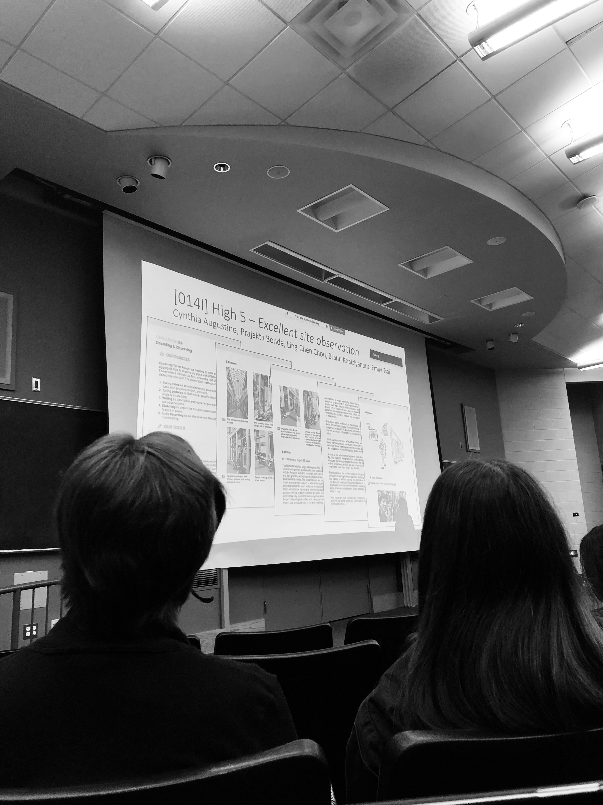
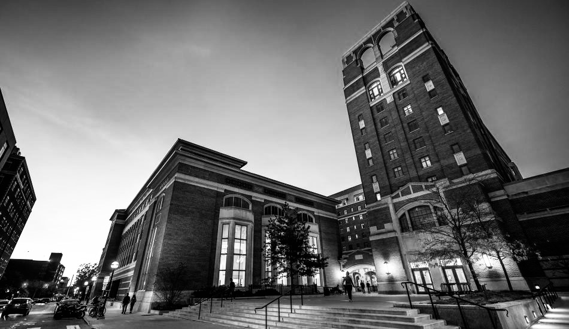

This gallery provides a glimpse into my experience at the Univeristy of Michigan's MSI program in UX Design and Research.

Picture taken in the Contextual Inquiry and Consulting Foundations classPicture taken during a Zip Crit presentation in the Intro to Interaction Design class.Picture taken during the first lecture of the semester.Picture taken of team members for Contexual Inquiry class.Picture taken of team members during observation exercise.Picture taken of work done by team for Intro to Interaction Design classImage of hand illustrations that I did for an observation task.

Picture taken of UofM School of Information.School taken of University of Michigan's campus.